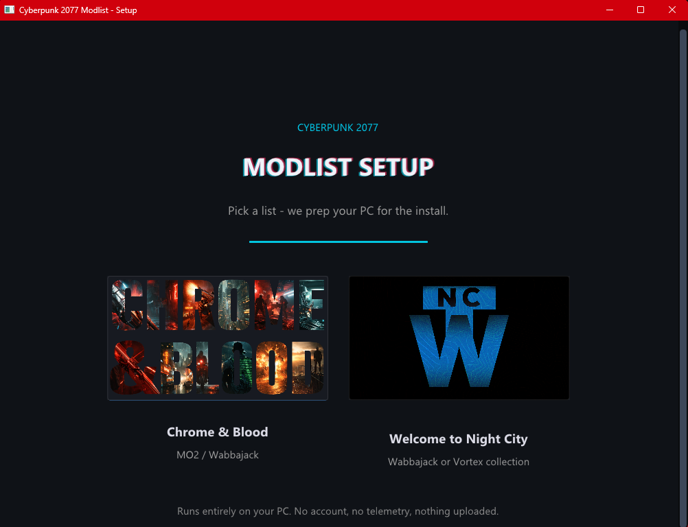

Read first: Chrome & Blood requires the Phantom Liberty DLC and an official copy of Cyberpunk 2077, updated to the latest version on Steam. An SSD is required — do not try to run this on an HDD. Only Windows 10/11 is supported.
System Requirements
Based on internal testing and community feedback. Your mileage will vary depending on hardware, background programs, and drivers.

The modlist itself is only ~9.6 GB on disk — the rest is the ~84.6 GB vanilla game it sits on top of, for ~105 GB total. Have at least 160 GB free on the SSD before you start; the install needs working room while Wabbajack downloads and extracts.
The Easy Way: Run the Setup Tool
Everything in the preinstallation list is handled by one small Windows tool. Download it, run it, pick Chrome & Blood, and it sorts out the runtimes, the Windows and Steam tweaks, the Wabbajack download, and cleaning the game back to vanilla. Anything only you can do, it walks you through with links. The manual steps further down are only there if you'd rather not run it.

- Download and run
CyberpunkModlistSetup.exeOne file, no install. Grab it from the latest release. Windows asks for administrator rights once on startup, because the runtime installers need them.
- Pick Chrome & Blood, then Mod Organizer 2
The screen reads top to bottom from there.
- Hit "Run all automatic steps"
Runtimes, Windows long paths, the Steam update setting, the Wabbajack download, and an optional clean-up of old mod files. All at once, or one at a time.
- Clear the checks
It reads your system and the game and flags anything that needs your attention, with a button to get you there.
- Do your part
The handful of steps only you can do, each with a link. Click a step's circle to mark it done as you go.
It's not a virus. Windows might tell you it is anyway. The tool isn't code-signed (a signing certificate costs money I'd rather put toward the list), and it does exactly the things antivirus is trained to distrust: it downloads installers, changes a couple of Windows settings, and clears out folders. An unsigned app doing all of that is enough for Windows SmartScreen to show an "Unknown publisher" warning, and every so often Defender flags it on a hunch. That's a false alarm, not a real detection.
Why you can trust it: every line of the source is public on GitHub. Read it, or build the exe yourself if you'd rather not run mine. Everything it downloads comes straight from Microsoft, the official Wabbajack GitHub, and the official Vortex GitHub, and each one is signature-checked before it runs. Nothing is uploaded, there's no account and no telemetry, and the clean-up step moves files to a reversible backup instead of deleting them. Only ever download the tool from the GitHub release linked above.
To get past SmartScreen: click More info, then Run anyway. If Defender quarantines it, restore it from the notification or add an exclusion. Want to scan it yourself first? Go for it. Just know an unsigned tool like this often trips a flag or two on a scan, which is that same false alarm, not real malware.
And if you're still convinced it's a virus but you're about to install my 12 GB modlist right afterward anyway... that's a pretty strange place to draw the line.
Prefer to Do It Yourself?
Everything the tool automates, by hand. You only need this if you skipped the tool, so don't do both. Instructions assume the Steam version of the game.
Show the manual preinstallation steps
- Perform a clean install of Cyberpunk 2077
No mods, no leftover files, fully updated to the latest official patch (not a beta branch). Install it outside of
Program Files. - Keep cloud sync away from the install
Do not put the game, the modlist, or the downloads folder anywhere OneDrive, Dropbox, or any other sync service touches. Synced folders lock files mid-install and break MO2's virtual file system.
- Install the Visual C++ Redistributables (All-in-One)
Extract and run
install_all.bat. - Disable Steam auto-updates
- Right-click Cyberpunk 2077 in your Steam Library → Properties
- Go to the Updates tab
- Set Automatic Updates to "Only update this game when I launch it"
- From now on, only launch the game through Mod Organizer 2
- Make sure all official DLC is installed
- Install REDmod
It's a free DLC on Steam — Steam must show both Cyberpunk 2077: REDmod and Cyberpunk 2077: Phantom Liberty as installed.
- Update your GPU drivers
- Install the .NET Runtime (latest version)
- Install the DirectX End-User Runtime
Install via Wabbajack
Used the setup tool? Wabbajack is already downloaded and you can send Chrome & Blood straight to it, so pick up at step 6 to set your paths.
You can install Chrome & Blood from the Nexus Collection, Nexus Mods, or the Wabbajack Gallery — all of them route into Wabbajack. Running third-party antivirus? Add your install and downloads folders to its exclusions before you hit Install so nothing gets quarantined mid-extraction.
- Download Wabbajack
Put it somewhere safe — not inside your Cyberpunk folder and not in a protected location like Program Files. Example:
D:\Wabbajack - Launch Wabbajack and go to Browse Modlists
- Filter by Cyberpunk 2077 and tick Featured
- Search for "Chrome & Blood" if it doesn't show up right away
- Click the cover art, then download and install
- Set your paths
- Installation:
D:\Wabbajack\Chrome & Blood - Downloads:
D:\Wabbajack\downloads— a shared downloads folder lets different Wabbajack lists reuse the same archives - Both folders need to be on the same drive as your Cyberpunk install, and not inside the game directory or Program Files
- Installation:
- Hit Install and let Wabbajack do its thing — don't interrupt it mid-run; it can take a while depending on your connection and hardware
- Open the install folder and launch
ModOrganizer.exe - Pick your profile — Immersive or Standard — then hit Run
Post-Installation
Antivirus warning: third-party antivirus software (especially BitDefender, Norton, and Webroot) will cause problems with MO2's Virtual File System. You may need to fully remove it for this list to work. Windows Defender with smart browsing habits is enough.
Also disable all overlays — Steam overlay, Discord overlay, GPU software overlays, Xbox Game Bar.
How to add a Windows Defender exclusion
- Open Windows Security
- Go to Virus & threat protection
- Click Manage settings
- Scroll to Exclusions → Add or remove exclusions
- Add your Chrome & Blood installation folder
- (Optional) Also exclude
ModOrganizer.exeandCyberpunk2077.exe
How to disable the overlays
- Steam: right-click Cyberpunk 2077 in your Library → Properties → untick "Enable the Steam Overlay while in-game"
- NVIDIA: open the NVIDIA App → Settings (gear icon) → disable "NVIDIA Overlay"
- AMD: open Adrenalin → Settings → Preferences → disable "In-Game Overlay"
- Xbox Game Bar: Windows Settings → Gaming → Xbox Game Bar → off. While you're there, toggling Game Mode off doesn't hurt either.
- Discord: overlay toggle lives in Discord's settings under Game Overlay
First Launch
- Pick your profile — Immersive or Standard — in MO2, then hit Run. Never launch Cyberpunk directly through Steam or a desktop shortcut.
- You can tweak in-game Mod Settings and CET menus freely. Changing the modlist itself (adding, removing, or reordering mods) voids support — read Rule 11 first if you want to customize.
- Performance not ideal? The FAQ's Graphics & Performance section has the full step-by-step setup.
Updating the Modlist
- Download the latest
.wabbajackfileOr find the updated listing in the Wabbajack gallery.
- Follow the installation steps above starting from step 2
- Check the
Overwritebox before installing so updated files get replaced properly
Back up first: saves and personal settings live in your profile folder. The FAQ covers exactly what to back up before an update, and how to keep your own added mods safe with the [NoDelete] tag.
Controls & Hotkeys
The full controls and hotkey reference — netrunning, Sandevistans, vehicles, and UI — lives in the Player Guide, along with how the reworked systems actually play. Most binds can be changed in the in-game Mod Settings menus; the Cyber Engine Tweaks overlay bind is set by you on first launch.